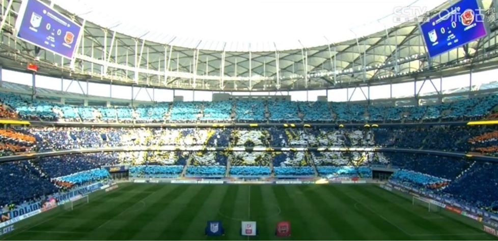
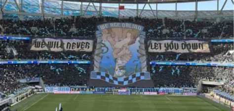
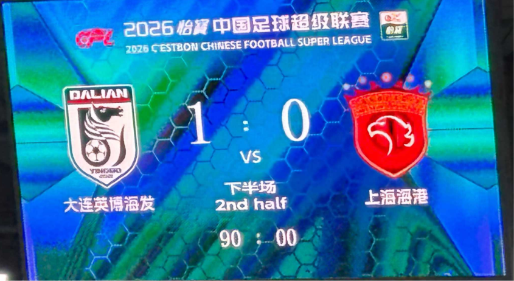
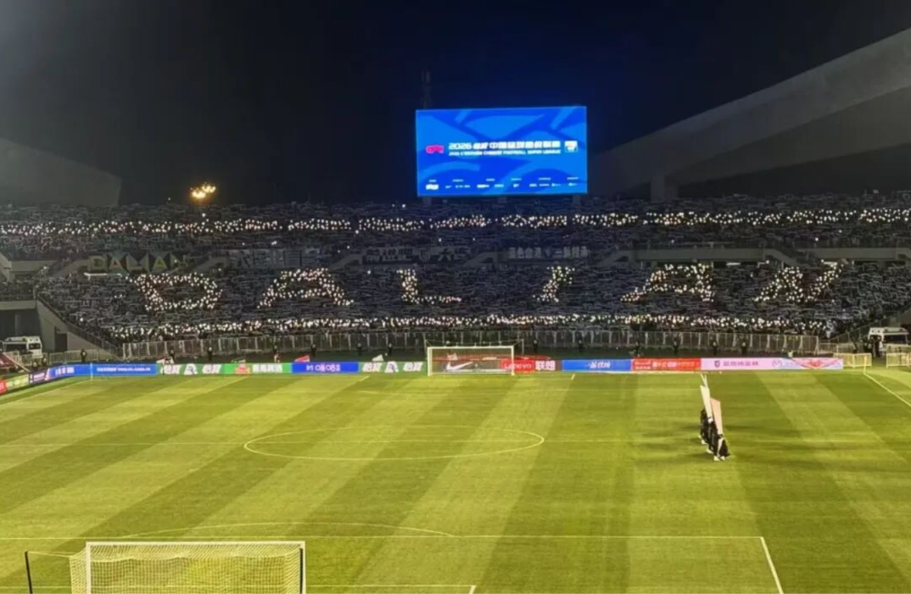
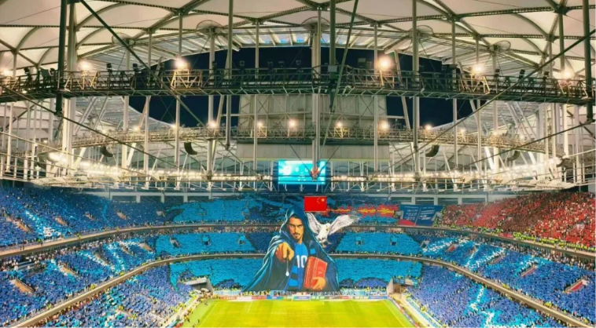

In the 2024 season, Dalian Yingbo FC got promoted to the 2025 Chinese Super League thanks to a final streak of six consecutive wins. The last match was exactly one week after Dalian Renmin FC was dissolved, and 60,901 fans poured into Suoyuwan Stadium (formerly Dalian Renmin FC's home ground).
Dalian Yingbo FC is different from any Dalian team since the Arbin era, and its coach is actually a native of Dalian.

The first home game of the 2025 season saw a massive TIFO at Suoyuwan Stadium. Many big hands lifted a small hand, symbolizing that Dalian has never given up on football. In this match, Dalian defeated Changchun FC 2-0, marking the first victory since this stadium opened. Interestingly, the head coach of Changchun FC is Hui Xie.
This season, the team had 9 wins, 9 draws, and 12 losses, finishing 11th in the league. At the same time, they won an away game for the first time in over 2,000 days. In the 2025 season, the total attendance for the team's 15 home games in the Chinese Super League was 874,020, averaging 58,268 per game. According to Transfermarkt, the average home attendance ranks among the top twenty clubs worldwide and first in Asia, with average cheering reaching over 105 decibels. The team's vibe is very different from the old Dalian team, and you can really see it.
Entering 2026, the team signed the underachieving Stancu from Serie A's Genoa, the biggest-name foreign player in the club's history, and also brought in Achimpen from Henan FC.
In the first two rounds, because the head coach's tactics were too aggressive, we lost both games and conceded nine goals, and everyone thought we were going to repeat the same mistakes.

In the third round, playing at home against the defending champions Shanghai Port, the head coach decisively gave up on possession and focused on low-position counterattacks. The team had only 3 shots with 1 on target and 31% possession throughout the game, yet they pulled off a shocking 1-0 win against the reigning champions.

The team then went on a five-game winning streak, and in the Liaoning derby away game, Stanciu scored a stunning winner from outside the box in the 84th minute. It's worth mentioning that in this match, over 10,000 Dalian fans, without any rehearsal, created the Chinese Super League's first-ever away TIFO with their phone flashlights, completely overwhelming the home crowd in terms of atmosphere.
The first half is over, and Dalian is in third place. This is Dalian's best result in nearly twenty years. Even though many strong teams started with negative points, we can't deny the team's growth.

On August 8, during the second round of the Liaoning Derby, Dalian fans created the first-ever full-stadium personal TIFO in Chinese Super League history for their captain Stanciu. Stanciu transformed into a Romanian magician, with a giant dragon behind him breathing fire to devour the away team dressed in red. Cleverly, the away fans who weren’t cooperating were integrated into the TIFO, becoming part of the mockery—probably a first in history. Stanciu lived up to expectations and scored a world-class goal to secure the win.
On September 4th in the FA Cup, even though they had a player sent off early in the game, Dalian actually took control and won 1-0, reaching the cup semi-finals for the first time in 20 years. It's worth mentioning that it was a weekday, yet 59,000 fans still turned up at the stadium.
As of the time the author wrote this, Dalian Yinguo FC is ranked second in the Chinese Super League, 6 points behind the top team Chengdu Rongcheng FC with two rounds to go. They are the only team in the league this season that can theoretically still aim for the double championship. Chengdu, having failed to win in the last four rounds and missed six championship points, is in low spirits, while Dalian has been unbeaten for seven rounds, with four consecutive wins, and boosting morale by scoring 7 goals in the last two rounds. As long as Dalian beats Chengdu in their direct match this Saturday, they have a very good chance of winning the CSL this season, completing the Dalian miracle of chasing down 14 points in 5 rounds.